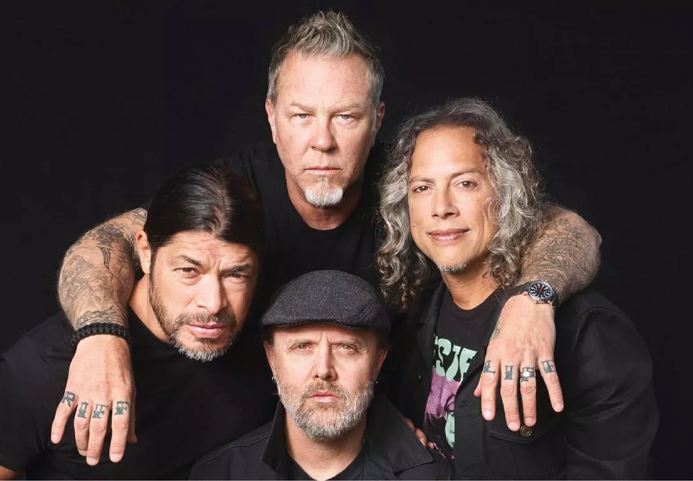
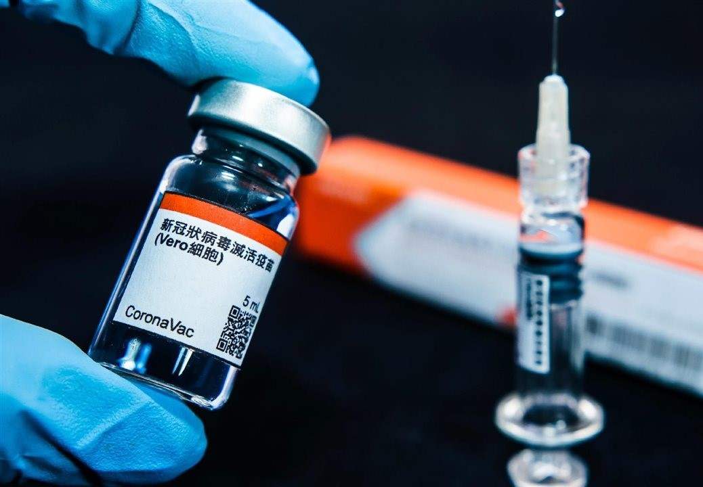

Início |
Notícias |
Quem Somos |
Contato |
Área do Assinante
Filtro
Música
Cinema
COVID-19
Shopping
Promoções
Data
Ultima semana
Ultimo mes
Ultimo ano
NOTÍCIAS EM DESTAQUE

Metallica anuncia as novas datas de shows no Brasil para maio de 2022
Alerta Vermelho. Filme mais caro da Netflix até hoje, ganha trailer oficial

COVID-19 - Confira aqui todos os locais de vacinação em Salvador